3.9 磁碟管理 (Disk Management)
目錄
Free space management
Link list Combination Counting
Allocation Method (配置方法)
連續性配置 (contiguous allocation) 鏈結式配置 (linked allocation)
FAT (file allocation table)
索引配置 (index allocation)
Disk structure
Disk access time
Disk scheduling
FCFS
SSTF
SCAN
C-SCAN
LOOK
C-LOOK
補充
RAID
RAID 的種類
RAID1
RAID0+1
RAID2
RAID3 vs RAID4
RAID5
RAID6
Summary
Free Space Management
Bit Vector (位元向量)
圖：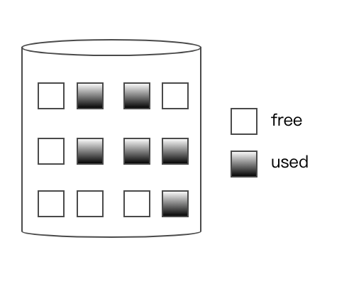
Def: 給各 block 一個 bit, 當 bit
bit = 0, 則 free block
bit = 1, 則 use
Ex: 011001110001
優點：
easy to implement
找連續可用的 block 容易
缺點：當 block 太多, 則 bit vector 不適用
Link list (鏈結串列)
Def: 將 free block 以 link 方式串接
Ex: 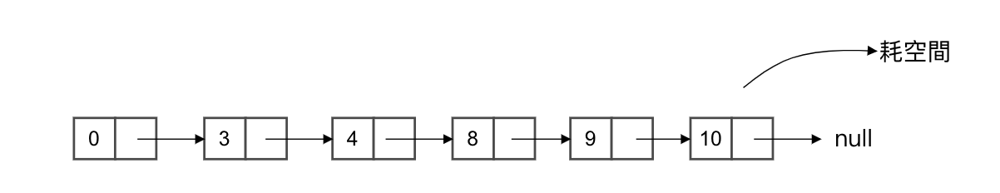
優點：insert / delete free block 容易
缺點：
檔案配置不便
link broken, data lose
Combination (組合)
Def: 將一 Node 給予多個格子合併而成
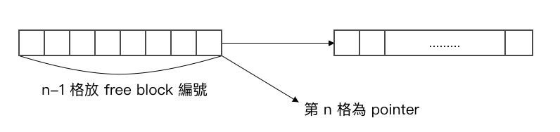
Ex: 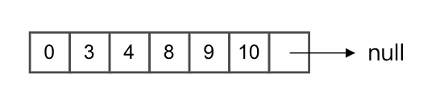
Counting (計數法)
Def: 在 linked list 中 Node 加入一空間, 放連續 free block 之數量 (連續的 free block 越多, 串列越短 )
Ex: 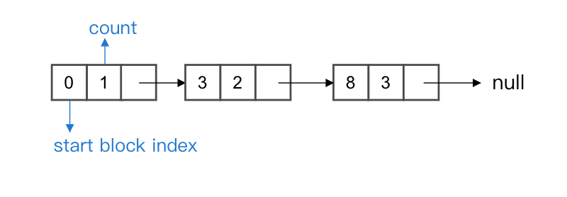
Allocation Method (配置方法)
連續性配置 (contiguous allocation)
Def: 檔案大小 = n blocks 時, O.S. 需找到連續 free block >= n, 方可配置
優點：
search time 短 => 因為 data 鄰近度
support sequential 及 random access => 處理快
缺點：
有 external 碎裂
檔案大小無法任意擴充
file size 需事先宣告
Solution:
Repack (壓縮), 但極度耗時 disk defragmentation 磁碟重組: 將 file 的分配重組, 以求能達:
access time 下降 => 速度快
連續空間變多 => 外部碎裂下降
圖：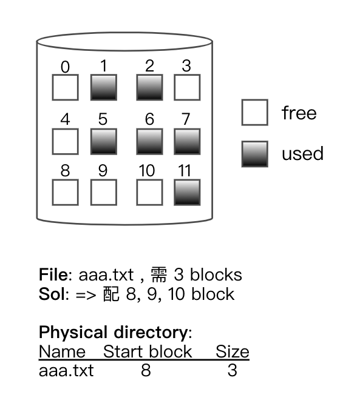
鏈結式配置 (linked allocation)
Def: 檔案大小 = n blocks 時, O.S. 需找到 free block >= n, 即可配置
優點：
No external 碎裂
檔案可以擴充
file size 不需事先宣告
缺點：
search time 長 (因為 data 不見得於鄰近處)
support sequential 較慢, 不支援 random access
圖：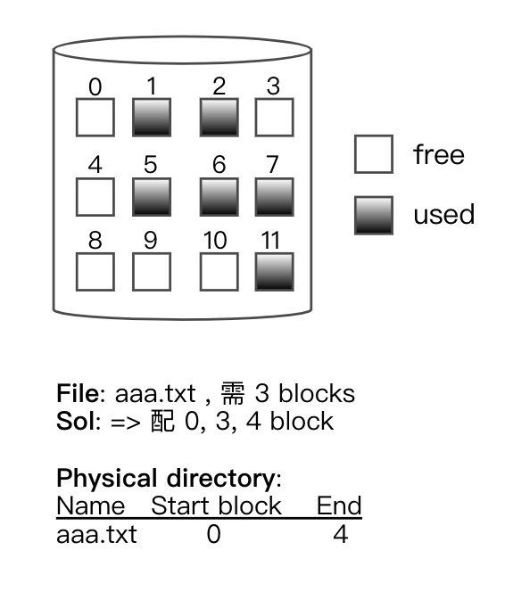
FAT (file allocation table)
Def:
用於 Dos, OS/2 之中
FAT Stored in the disk, 紀錄各 file block 的 link 關係
Ex: 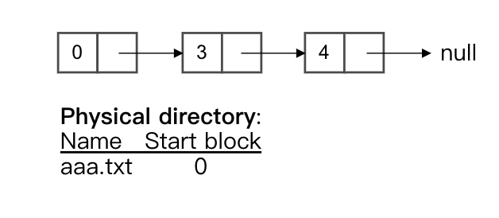
Note: windows PC 版用 "NTFS" 格式
圖：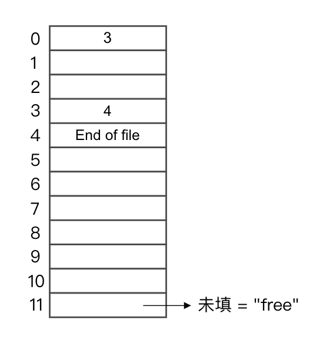
索引配置 (index allocation)
Def: 各 file 皆有自己的 index block, 用以指向其 block 對應到 disk block 的編號為何
Ex: 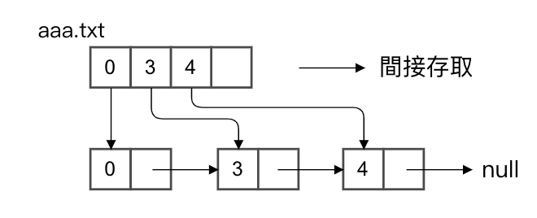
優點：結合 Contiguous Allocation & Linked Allocation 的優點 => speed up 又有彈性
缺點：
index block 需佔用額外空間
index block 大小不易決定
i-node (unix-like 常用)
概念：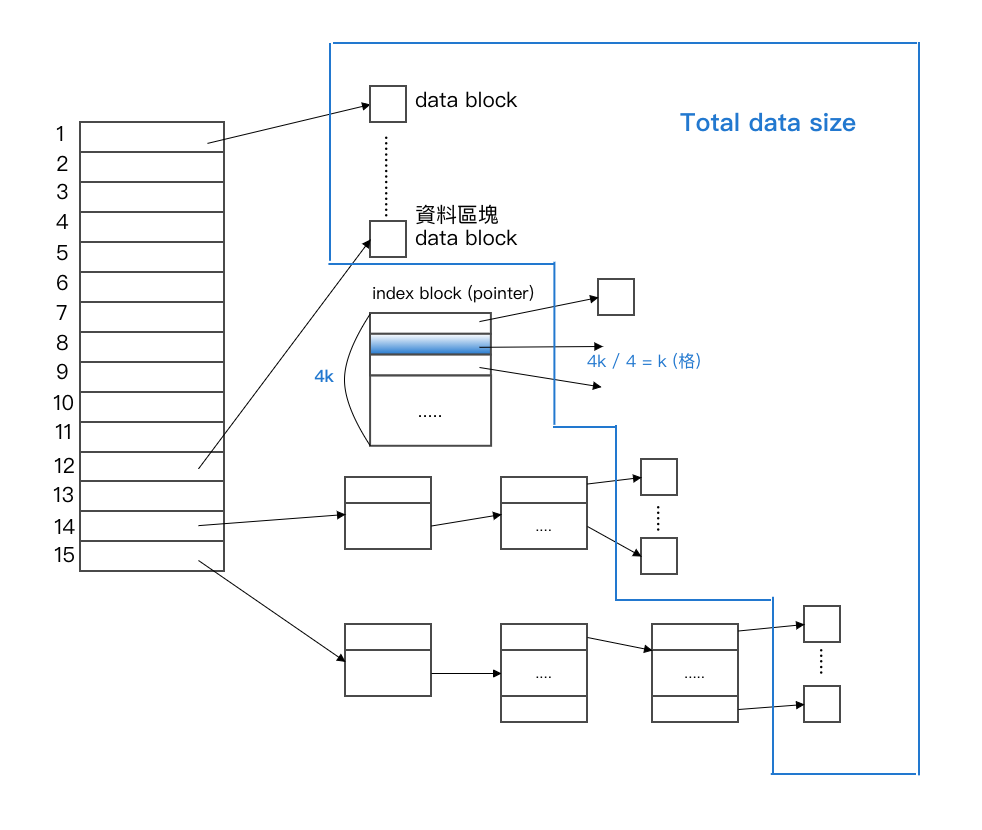
說明：
Ex:Sol: 10 * 4 bytes + 4k/4 * 4 bytes +k * k * 4 bytes + k * k * k * 4 bytes40 bytes + 4kB + 4k^2B + 4k^3B